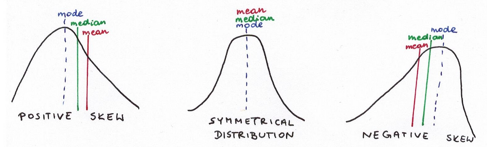

You should know today
- Make questions to your data?
- Explore the basic features of your data
- Make simple exploratory graphics
Before we begin
- R and Rstudio installed
- Don’t panic
- Everything is reproducible
- You’ll have to train to fix the content
What questions should I make to the data?
Back to Spreadsheets
The Penguins file
penguins_df<-read.csv("https://raw.githubusercontent.com/fplmelo/ecoaplic/refs/heads/main/content/slides_aulas/rm_da/penguins.csv")
penguins_df
version.https...git.lfs.github.com.spec.v1
1 oid sha256:bf3738eebc06177e1977438551f87d5e7ead6ddf3c7f3152fcef0ee2152241a1
2 size 19258
We know this data
library(tidyverse)
library(palmerpenguins)
data("penguins")
penguins %>%
select(1:5)
# A tibble: 344 × 5
species island bill_length_mm bill_depth_mm flipper_length_mm
<fct> <fct> <dbl> <dbl> <int>
1 Adelie Torgersen 39.1 18.7 181
2 Adelie Torgersen 39.5 17.4 186
3 Adelie Torgersen 40.3 18 195
4 Adelie Torgersen NA NA NA
5 Adelie Torgersen 36.7 19.3 193
6 Adelie Torgersen 39.3 20.6 190
7 Adelie Torgersen 38.9 17.8 181
8 Adelie Torgersen 39.2 19.6 195
9 Adelie Torgersen 34.1 18.1 193
10 Adelie Torgersen 42 20.2 190
# ℹ 334 more rows
How to visually check continuous variables?
Histograms
library(tidyverse)
library(palmerpenguins)
data("penguins")
penguins %>%
group_by(species) %>%
ggplot(aes(x=bill_length_mm, color=species, fill=species))+
geom_histogram()
Boxplots
library(tidyverse)
library(palmerpenguins)
data("penguins")
penguins %>%
group_by(species) %>%
ggplot(aes(x=species,
y=bill_length_mm,
color=species,
fill=species))+
geom_boxplot(alpha=0.5)+
theme(axis.text=element_text(size=16),
axis.title=element_text(size=16))
Your turn
- Try to reproduce with any other continuous variable
- |Do a Historgram and a Boxplot
Checking categorical varibles
Species of penguin
library(tidyverse)
library(palmerpenguins)
penguins %>%
ggplot(aes(x=species,
color=species,
fill=species))+
geom_bar(alpha=0.5)+
theme(axis.text=element_text(size=16),
axis.title=element_text(size=16))
Observations per year
library(tidyverse)
library(palmerpenguins)
penguins %>%
ggplot(aes(x=year,
color=species,
fill=species))+
geom_bar()+
theme(axis.text=element_text(size=16),
axis.title=element_text(size=16))
Observations per island
library(tidyverse)
library(palmerpenguins)
penguins %>%
ggplot(aes(x=island,
color=species,
fill=species))+
geom_bar()+
theme(axis.text=element_text(size=16),
axis.title=element_text(size=16))
Visualising correlations
penguins %>%
ggplot(aes(x=bill_length_mm,
y = bill_depth_mm))+
geom_point()+
theme(axis.text=element_text(size=16),
axis.title=element_text(size=16))
Visualising correlations per species
penguins %>%
ggplot(aes(x=bill_length_mm,
y = bill_depth_mm,
color=species,
fill=species))+
geom_point()+
theme(axis.text=element_text(size=16),
axis.title=element_text(size=16))
Body mass per sex
penguins %>%
na.omit() %>%
ggplot(aes(x=sex,
y = body_mass_g,
color=species,
fill=species))+
geom_boxplot(alpha=0.7)+
theme(axis.text=element_text(size=16),
axis.title=element_text(size=16))
Body mass per sex (iverting groups)
penguins %>%
na.omit() %>%
ggplot(aes(x=species,
y = body_mass_g,
color=sex,
fill=sex))+
geom_boxplot(alpha=0.7)+
theme(axis.text=element_text(size=16),
axis.title=element_text(size=16))
Your turn
- Can boby mass predict bill length?
- Do sex explain flipper length
Exploring data is asking relevant questions
- This is not mining
- Don’t just correlate random things
- Start to imagine before coding
Check distributions
penguins %>%
na.omit() %>%
pivot_longer(bill_length_mm:body_mass_g, names_to = "trait") %>%
ggplot(aes(x=value,
group=species,
fill=species,
color=species))+
geom_density(alpha=0.7)+
facet_grid(~trait, scales = "free_x" )+
theme(axis.text=element_text(size=16),
axis.title=element_text(size=16))+
theme_minimal()
Moments of centrality

Mean, median and mode
Moments of dispersion
- Variance
- Standard deviation
- Standard Error
- Range
- Quantiles
Checking via histogram
set.seed(999)
normal<-rnorm(100)
normal %>%
as.tibble() %>%
ggplot(aes(value))+
geom_histogram(color="#DD4A48", fill="#DD4A48")+
geom_vline(xintercept=c(mean(normal), (mean(normal)+sd(normal)),mean(normal)-sd(normal)),
linetype="dashed")
Checking via bokplot
set.seed(999)
normal<-rnorm(100)
normal %>%
as.tibble() %>%
ggplot(aes(value))+
geom_boxplot(fill="#DD4A48",alpha=0.7)
Workflow

End of session on DA
renderthis::to_pdf("02_data_wrangling.html")
ℹ Rendering '02_data_wrangling.html' into 02_data_wrangling.pdf
✔ Rendering '02_data_wrangling.html' into 02_data_wrangling.pdf ... done